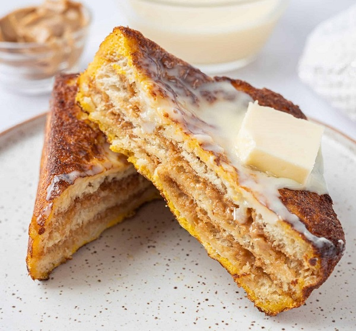

Ingredients:
- 6 pieces square milk or egg bread
- 4 tablespoons heaping peanut butter
- 2 eggs
- Cooking oil
- Butter
- Condensed Milk, honey or maple syrup
Description:
A popular Hoong Kong cafe dessert. Layered french toast stuffed with peanut butter, coated in egg and shallow fried.
Recipe credits:
Steps:
- With 3 pieces of bread, spread peanut butter on 2 of the 3 pieces. Sandwich them together. Repeat for the other sandwich.
- Slice off the crusts of your sandwiches to create a square.
- Whisk 2 eggs.
- Fill a shallow layer of cooking oil in a deep pan. Bring it to low medium heat.
- Lightky coat one sanwich in egg.
- Lower that sandwich into the hot oil. Fry on all sides until golden brown. Repeat the above step for second sandwich.
- Enjoy hot with butter and sweetener of your choice!